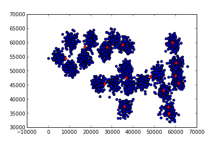

Paralel KMeans, Hadoop
K-Means algoritmasını [1] nasıl paralel şekilde işletiriz? Özellikle Hadoop gibi bir Eşle-İndirge (Map-Reduce) ortamını düşünelim. Veri çok büyük ölçekte olabilir ve bu veriler birden fazla makinaya bölünecektir. Eşle-İndirge kavramında eşleme safhasında "anahtar üretiriz", ve sonra indirgeme safhasında Hadoop sistemi öyle kurmuştur ki aynı anahtarlarlar tek bir makinaya gönderilir, ve bu nihai aşamada artık anahtar bazında indirgeme (özetleme) yapılır.
Paralel K-Means için anahtar nedir? Anahtar, mesela küme olabilir. Yani küme 1, küme 2 gibi küme işaretleri / sayıları anahtar olarak kullanılabilirler.
Peki anahtar ile eşlenecek "değer" nedir?
Öyle bir değer arıyoruz ki üst üste konulabilecek bir şey olmalı, Eİ sisteminin kuvveti burada, anahtarlar farklı noktalarda üretilebiliyor, sonra tek noktada üst üste konuyor, o zaman değerler öyle üretilmeli ki bu üst üste koyma, özetleme işlemi yapılabilsin. Üst üste konabilecek şey, her veri noktası için, o veri noktasının ait olduğu küme üzerinden toplama işlemidir. 10.20, 20.5 veri noktasına bakıyorum, bu nokta o anda elde olan küme merkezlerinden 6'ya en yakın, 10.20, 20.5 verisi ile bir 6 anahtarı yayınlarım.
Tabii burada tavuk/yumurta problemi var, küme merkezlerini arıyorum,
ama anahtar üretimi için küme merkezi lazım. Bu nasıl olacak? O zaman
(ilk başta rasgele bile olsa) küme merkezlerinin bilgisi tüm
makinaların erişebileceği bir yerde olmalı. Biz bu veriyi
centers.csv adlı bir dosyaya koymaya karar verdik, bu dosya tek
makina ortamında bilinen bir dizinde (mesela /tmp), çok makinalı
ortamda ise HDFS üzerinde herkesin erişebileceği bir yerde olmalı.
Toplamaya gelelim: Normal K-Means'i hatırlarsak, her nokta için o noktaya en yakın kümeyi buluyordu ve sonra, atama işlemi bitince, her kümenin altındaki noktaları toparlayıp onların ortalamasını alarak yeni küme merkezini hesaplıyordu. Paralel ortamda ortalama işlemi üst üste konabilecek bir şey, çünkü toplama üst üste konabilecek bir işlem, ve / yani farklı makinalarda küme-nokta, eşlemelerini üretirsek, indirgeme aşamasında o anahtar için tüm değerleri toplayıp nokta sayısına böleriz ve yeni küme merkezini elde ederiz.

Şimdi Hadoop ile ilgili bazı lojistik konulara gelelim:
Paralel K-Means için tek bir eşle-indirge işletimi yeterli değil, bu
algoritma döngülü / özyineli (iterative) bir algoritma, 5,10,20 kez
işlemesi gerekebilir. Her döngü (indirgeme) sonunda yeni küme
merkezleri hesaplanacak, bu merkezler eski centers.csv yerini alacak
ve işlem tekrar başlayacak.
Şimdi ham veriyi gösterelim,
from pandas import *
df1 = read_csv("../kmeans/synthetic.txt",comment='#',,sep=" ")
plt.scatter(df1.ix[:,0],df1.ix[:,1])
plt.savefig('kmeans_1.png')

from mrjob.job import MRJob
from mrjob.protocol import PickleProtocol
import numpy as np, sys
import pandas as pd
import os, random
def euc_to_clusters(x,y):
return np.sqrt(np.sum((x-y)**2, axis=1))
class MRKMeans(MRJob):
INTERNAL_PROTOCOL = PickleProtocol
def __init__(self, *args, **kwargs):
super(MRKMeans, self).__init__(*args, **kwargs)
self.centers_ = pd.read_csv("/tmp/centers.csv",header=None,sep=" ")
self.k = 15
def mapper(self, key, line):
point = np.array(map(np.float,line.split(' ')))
c = np.argmin(euc_to_clusters(np.array(self.centers_), point))
yield(c, point)
def reducer(self, key, tokens):
new_centers = np.zeros((1,2))
counts = 0
for val in tokens:
new_centers += val
counts += 1
yield('final', (key, new_centers[0] / counts))
def reduce_all_centers(self, key, values):
new_centers = np.zeros((self.k,2))
self.f=open("/tmp/centers.csv","w")
for (cluster,val) in values:
print cluster, val
new_centers[cluster] = val
for row in new_centers:
self.f.write(" ".join(map(str,row)))
self.f.write("\n")
self.f.close()
def steps(self):
return [self.mr(mapper=self.mapper,reducer=self.reducer),
self.mr(reducer=self.reduce_all_centers)]
if __name__ == '__main__':
for i in range(15): MRKMeans.run()
reduce_all_centers çağrısı tüm indirgeyiciler her küme için yeni
orta noktayı hesaplayıp onu yayınladıktan (emit) sonra, tüm yeni
merkezlerin geleceği yer.
Komut satırından tek makina için Hadoop'suz işletelim,
!sort --random-sort synthetic.txt > /tmp/synthetic.txt
!head -15 /tmp/synthetic.txt > /tmp/centers.csv
!python kmeans.py synthetic.txt
/usr/local/lib/python2.7/dist-packages/pytz/__init__.py:29: UserWarning: Module _yaml was already imported from /usr/lib/python2.7/dist-packages/_yaml.so, but /usr/local/lib/python2.7/dist-packages is being added to sys.path
from pkg_resources import resource_stream
using configs in /home/burak/.mrjob.conf
creating tmp directory /tmp/kmeans.burak.20131202.234454.312709
writing to /tmp/kmeans.burak.20131202.234454.312709/step-0-mapper_part-00000
Counters from step 1:
(no counters found)
writing to /tmp/kmeans.burak.20131202.234454.312709/step-0-mapper-sorted
> sort /tmp/kmeans.burak.20131202.234454.312709/step-0-mapper_part-00000
writing to /tmp/kmeans.burak.20131202.234454.312709/step-0-reducer_part-00000
Counters from step 1:
(no counters found)
writing to /tmp/kmeans.burak.20131202.234454.312709/step-1-mapper_part-00000
Counters from step 2:
(no counters found)
writing to /tmp/kmeans.burak.20131202.234454.312709/step-1-mapper-sorted
> sort /tmp/kmeans.burak.20131202.234454.312709/step-1-mapper_part-00000
writing to /tmp/kmeans.burak.20131202.234454.312709/step-1-reducer_part-00000
10 [ 33655.97916667 59869.70138889]
13 [ 10318.87456446 55430.98780488]
9 [ 21286.26027397 59328.61187215]
0 [ 34297.27789474 43563.19789474]
1 [ 56490.3362069 37260.18103448]
2 [ 56217.97297297 43823.02702703]
3 [ 56453.07407407 34324.16666667]
4 [ 22960.27741935 45942.7483871 ]
5 [ 61346.1443299 47761.37113402]
6 [ 58466.11940299 60120.6641791 ]
7 [ 51691.66477273 48608.63636364]
8 [ 60189.47019868 53209.15231788]
11 [ 62427.68 44841.88]
12 [ 27699.59813084 56743.19626168]
14 [ 41850.40925267 47055.58362989]
Counters from step 2:
(no counters found)
Moving /tmp/kmeans.burak.20131202.234454.312709/step-1-reducer_part-00000 -> /tmp/kmeans.burak.20131202.234454.312709/output/part-00000
Streaming final output from /tmp/kmeans.burak.20131202.234454.312709/output
removing tmp directory /tmp/kmeans.burak.20131202.234454.312709
using configs in /home/burak/.mrjob.conf
using configs in /home/burak/.mrjob.conf
creating tmp directory /tmp/kmeans.burak.20131202.234456.597838
creating tmp directory /tmp/kmeans.burak.20131202.234456.597838
writing to /tmp/kmeans.burak.20131202.234456.597838/step-0-mapper_part-00000
writing to /tmp/kmeans.burak.20131202.234456.597838/step-0-mapper_part-00000
Counters from step 1:
Counters from step 1:
(no counters found)
(no counters found)
writing to /tmp/kmeans.burak.20131202.234456.597838/step-0-mapper-sorted
writing to /tmp/kmeans.burak.20131202.234456.597838/step-0-mapper-sorted
> sort /tmp/kmeans.burak.20131202.234456.597838/step-0-mapper_part-00000
> sort /tmp/kmeans.burak.20131202.234456.597838/step-0-mapper_part-00000
writing to /tmp/kmeans.burak.20131202.234456.597838/step-0-reducer_part-00000
writing to /tmp/kmeans.burak.20131202.234456.597838/step-0-reducer_part-00000
Counters from step 1:
Counters from step 1:
(no counters found)
(no counters found)
writing to /tmp/kmeans.burak.20131202.234456.597838/step-1-mapper_part-00000
writing to /tmp/kmeans.burak.20131202.234456.597838/step-1-mapper_part-00000
Counters from step 2:
Counters from step 2:
(no counters found)
(no counters found)
writing to /tmp/kmeans.burak.20131202.234456.597838/step-1-mapper-sorted
writing to /tmp/kmeans.burak.20131202.234456.597838/step-1-mapper-sorted
> sort /tmp/kmeans.burak.20131202.234456.597838/step-1-mapper_part-00000
> sort /tmp/kmeans.burak.20131202.234456.597838/step-1-mapper_part-00000
writing to /tmp/kmeans.burak.20131202.234456.597838/step-1-reducer_part-00000
writing to /tmp/kmeans.burak.20131202.234456.597838/step-1-reducer_part-00000
10 [ 34190.76071429 59473.68214286]
13 [ 9524.38372093 55188.34689922]
9 [ 19288.00425532 59048.12340426]
0 [ 34495.96781609 42837.15862069]
1 [ 56603.56756757 37301.28378378]
2 [ 54698.1862069 43080.47586207]
3 [ 56850.95180723 34689.86746988]
4 [ 23627.50314465 45589.86792453]
5 [ 60775.48039216 47705.81372549]
6 [ 58623.54054054 59894.10135135]
7 [ 51384.90184049 49124.60736196]
8 [ 60238.23021583 52723.48920863]
11 [ 61762.52830189 45110.81132075]
12 [ 27191.86813187 57337.64835165]
14 [ 41387.76223776 47391.7972028 ]
...
import pandas as pd
df1 = pd.read_csv("../kmeans/synthetic.txt",comment='#',sep=" ",header=None)
plt.scatter(df1.ix[:,0],df1.ix[:,1])
plt.hold(True)
df2 = pd.read_csv("/tmp/centers.csv", sep=" ", header=None)
plt.plot(df2.ix[:,0],df2.ix[:,1],'rd')
plt.savefig('kmeans_2.png')

K-Means'i 20 kere işlettik. Eğer istenirse (hatta daha iyi olur) döngü
bir while içine konur ve bitiş için "stabilite şartı"
aranır. Stabilite yeni küme merkezinin eskisinden "çok fazla değişik
olup olmadığı" şartıdır, değişim yoksa artık sonucu bulmuşuz demektir,
daha fazla döngüye gerek kalmayacaktır. Biz döngüyü 20 kere döngüyü
işlettik, bu problem için yeterli oldu.
K-Means işini bitirdikten sonra elde edilen sonuçları
okuyabiliriz. Nihai küme merkezleri /tmp/centers.csv içinde. Bu
merkezleri alıp, ham veri üzerinde kırmızı nokta olarak gösteriyoruz.
Veriyi 20-30 makinaya dağıtarak parça parça işleyip kümelemeniz mümkündür. Endüstride son zamanlarda habire duyulan Büyük Veri (Big Data) olayı işte bu.

Kaynaklar
[1] [K-Means Kümeleme Metodu](https://burakbayramli.github.io/dersblog/algs/algs080kmeans/kmeanskumelememetodu.html)